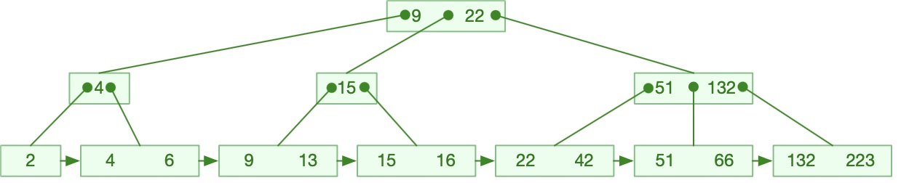

B+ Tree是多路搜索树(B-Tree)的一种变体，在磁盘查找结构中，B+ Tree更适合文件系统的磁盘存储结构。
相对于多路搜索树(B-Tree)来说B+ Tree更充分的利用了节点的空间，让查询速度更加稳定，其速度完全接近于二分法查找。
概念
定义：一颗度为m的B+ Tree满足以下规则：
- 整棵树的节点分为两类：叶子节点(用于存储数据)和非叶子节点(包括根节点；不存储数据，只保存关键字用作索引)。
- 非叶子节点：
- 根节点有2 ~ m个分支(子节点)；
- 根节点可以是叶子节点也可以是非叶子节点；
- 其他的非叶子节点有\(\lceil m/2 \rceil\) ~ m个分支(子节点)；
- 非叶子节点的 分支点数=关键字数-1 (或者 分支点数=关键字数 ，MySQL用的是这一种)；
- 两个关键字k,,i,,、k,,i+1,,之间的分支内的关键字/数据，范围在 [k,,i,,,k,,i+1,,) 之间(最后一个分支大于等于前一个关键字)。
- 所有的非叶子节点关键字都同时存在于某个叶子节点，且在该叶子节点元素中是最小元素。
- 叶子节点：
- 叶子节点在同一层；
- 所有叶子节点通过指针链相连，且叶子节点本身按关键字的大小从小到大顺序排列(从左连到右)。
- 自然插入而不进行删除操作时，叶子节点的数据容量为\([\lfloor m/2\rfloor ,m-1]\)，非叶子节点的关键字数量容量为\(\left[\lceil m/2\rceil -1,m-1\right]\)。
如：

- 由于叶子节点和非叶子节点的功能不同(叶子节点之存储数据，非叶子节点只作为“路标”)，所以一般来讲两种节点的数据结构是不同的 ( _非叶子节点的结构可以参考B-Tree|多路搜索树(B-Tree)，叶子节点可以做成“数据数组+长度+指向下一个叶子节点的指针”这样的节点结构_) 。
- B+树有两个头指针，一个指向根节点、一个指向最小的叶子节点。
在进行删除操作时，涉及到索引节点填充因子和叶子节点填充因子，一般可设叶子节点和索引节点的填充因子都不少于50%。
注意：由于本文所用的是“左大等右小于”的判断方式，所以关键字是每个节点的最小元素，再删除的时候删除最小值需要上溯修改关键字；如果换成“左大于右小于”，关键字就是每个节点的最大元素了，删除逻辑需要调整。
操作
B+ Tree是多路搜索树(B-Tree)的变种，在查找、插入和删除操作上和多路搜索树(B-Tree)很类似。
查找
- 从根节点开始，所寻找的值依次和节点的k-1个关键字比较：
- 若小于该关键字，那么进入该关键字左侧的分支重复搜索动作；
- 若大于等于该关键字，
- 若这是该节点的最后一个关键字，那么进入该关键字右侧的分支重复搜索动作；
- 若不是最后一个关键字，所搜索值继续和下一个关键字比较。
- 如果进入了叶子节点，那么就遍历叶子节点的数组找到所要的值；找不到则退出。
遍历
- 遍历操作，先去找最左侧的树，然后顺着叶子节点的指针一路摸下去就可以。
- 如果存储了最小叶子节点的指针，那就更方便了。
插入
首先明确，对于一个阶为m的B+ Tree：
- 根节点的关键字容量为\(1\sim\left(m-1\right)\)；
- 中间节点和叶子节点的关键字容量为\(\left(\lceil\frac{m}{2}\rceil -1\right)\sim\left(m-1\right)\)。
- 叶子节点的容量为\(\lfloor m/2\rfloor \sim (m-1)\)。
插入元素可能会破坏B+ Tree的规则(叶子节点容量超过上限)，解决方法就是 ''拆分叶子节点''。同时，非叶子节点也需要拆分。
- Step 0：如果这是一颗空树，根节点作为叶子节点，把元素直接放入；
- Step 1：搜索触底到达叶子节点，插入的元素；
- Step 2：看元素数量是否超过了节点容量上限：
- 如果没有超过，可以返回；
- 如果超过了，取叶子节点的元素序列中的中间元素(如果有两个就取中间右侧，因为规则2.4是“大于等于”)作为新的关键字，将叶子节点分为两个(取的元素不从叶子节点删除，分给右边的节点)，挂在新的关键字两边(如果叶子节点非根节点，那么左边的节点不动，依旧挂在原来的位置)；该关键字放到这之上的非叶子节点；如果如果叶子节点是根节点，那么新的关键字变成非叶子节点的根节点。
- Step 3：如果叶子节点非根节点，继续调整关键字：这里就和 多路搜索树(B-Tree) 的插入上翻维护一样了，只是注意取中间右侧的关键字(上升的关键字需要删除)，不断上翻维护直到不超过关键字容量上限。
就取序列中间(如果有两个中间的就取一个)的一个关键字，两侧的关键字分裂为两个新的节点接在选出的关键字两侧。把这个选出的关键字插入上一层节点中(调回执行Step 2)——如果之前的节点是根节点就把该关键字作为新的根节点。
删除
B+ Tree的删除和多路搜索树(B-Tree)很像，只是记得改变每个叶子节点最小值之后需要上溯修改关键字。
- Step 0：如果这是一颗空树，或者没有找到要删除的值，返回。
- Step 1：删除节点：找到叶子节点的该元素，删除；
- 如果该节点此时的元素数量已经小于容量下限：
- 如果该叶子节点左侧和右侧的叶子节点，都没有达到最小容量下限，就拿左侧最大的元素给该节点；
- 如果该叶子节点左侧叶子节点已达到下限而右侧叶子节点没有，就用右侧最小的来给它；
- 如果该叶子节点右侧叶子节点已达到下限而左侧叶子节点没有，同理；
- 如果该叶子节点左右两侧叶子节点都达到最小下限，就让该节点与左侧(或者右侧)叶子节点合并，删除该点左侧(或者右侧)的关键字。
- 如果没有小于容量下限，不作调整。
- 如果该节点此时的元素数量已经小于容量下限：
- Step 3：更新关键字
- 如果上一步没有发生叶子节点合并，但是该叶子节点或者右侧叶子节点的最小元素已经改变，就需要更新关键字：
- 取新的最小元素，覆盖之前的该叶子节点左侧的关键字(如果是该叶子节点最小元素发生改变)或者右侧的关键字(如果是该叶子节点的右侧叶子节点最小元素发生改变)；
- 进一步，如果上一层非叶子节点中，所修改的关键字也是该节点中最小的关键字，就需要继续向上修改，依此循环直至不再是最小关键字。
- 如果上一步发生了叶子节点的合并，也需要调整关键字：
- 如果上层非叶子节点的关键字数量已小于容量下限，就需要做 ''左旋、右旋或者合并'' ，方法和 多路搜索树(B-Tree) 一样(Step 3.2)、一路上溯——但是需要注意几点：
- ① 左旋右旋移动关键字的时候，别忘了把所属分支也挪过来！
- ② 如果非叶子节点(如果修改过左右非叶子节点，那么左右也要看)的最小关键字更新了，需要继续上溯更新；
- ③ ''如果已经上溯到根节点，并且根节点也小于容量下限了，那么合并的叶子节点将作为根节点。''
- 如果上层非叶子节点关键字数量没有低于容量下限，但是如果是该非叶子节点的第一个叶子节点和其右侧节点合并，那么上一层的非叶子节点最小关键字将改变，按照上面的方法一路上溯更新。
- 如果上层非叶子节点的关键字数量已小于容量下限，就需要做 ''左旋、右旋或者合并'' ，方法和 多路搜索树(B-Tree) 一样(Step 3.2)、一路上溯——但是需要注意几点：
- 如果上一步没有发生叶子节点合并，但是该叶子节点或者右侧叶子节点的最小元素已经改变，就需要更新关键字：
这里有一些带图示的例子有助于理解。
B+ Tree对B-Tree的改进
相较于多路搜索树(B-Tree)，B+ Tree的非叶子节点没有包括有效的元素信息(是这样的，在实际存储中，树中存储的不可能只有一个值，而是一段数据+一个ID值，所以说B+ Tree非叶子节点没有有效的元素信息)，非叶子节点中的关键字只作为叶子结点元素的索引而存在，需要的信息全都在叶子节点上。
B+ Tree严格意义上说已经不是树，它的叶子结点之间也有指针链接。B+ Tree的非终结点中并不含有关键字的信息。
查找对比：
- B+ Tree的层级更少：在磁盘页大小相同的情况下，相较于多路搜索树(B-Tree)，B+ Tree每个非叶子节点存储的关键字数更多(因为不存储元素数据)，树的层级更少所以查询数据更快；所以在相同数量的待查数据下，B+ Tree查找过程中需要调用的磁盘IO操作要少于普通多路搜索树(B-Tree)树。因此B+ Tree的查找性能要好于多路搜索树(B-Tree)。
- B+ Tree的查找更加稳定，因为所有叶子结点都处于同一层中，而且查找所有关键字都必须走完从根结点到叶子结点的全部历程。因此同一颗B+ Tree中，任何关键字的查找比较次数都是一样的。而多路搜索树(B-Tree)就不一定了，可能查找到某一个非终结点就结束了。
插入删除对比：B+ Tree与多路搜索树(B-Tree)在插入删除操作中的效率是差不多的。
B+ Tree天然具备排序功能：B+ Tree所有的叶子节点数据构成了一个有序链表，在查询大小区间的数据时候更方便。
数据紧密性很高(磁盘存储)，缓存的命中率也会比多路搜索树(B-Tree)高，这种情况下访问更快。
B+ Tree全节点遍历更快：B+ Tree遍历整棵树只需要遍历所有的叶子节点即可，而不需要像多路搜索树(B-Tree)一样需要对每一层进行遍历，这有利于数据库做全表扫描和范围查询。
总体评价：在应用背景下，特别是文件结构存储中。B+ Tree的应用要更多，其效率也要比多路搜索树(B-Tree)好。
- 多路搜索树(B-Tree)相对于B+ Tree的优点是，如果经常访问的数据离根节点很近，而多路搜索树(B-Tree)的非叶子节点本身存有关键字其数据的地址，所以这种数据检索的时候会要比B+ Tree快。